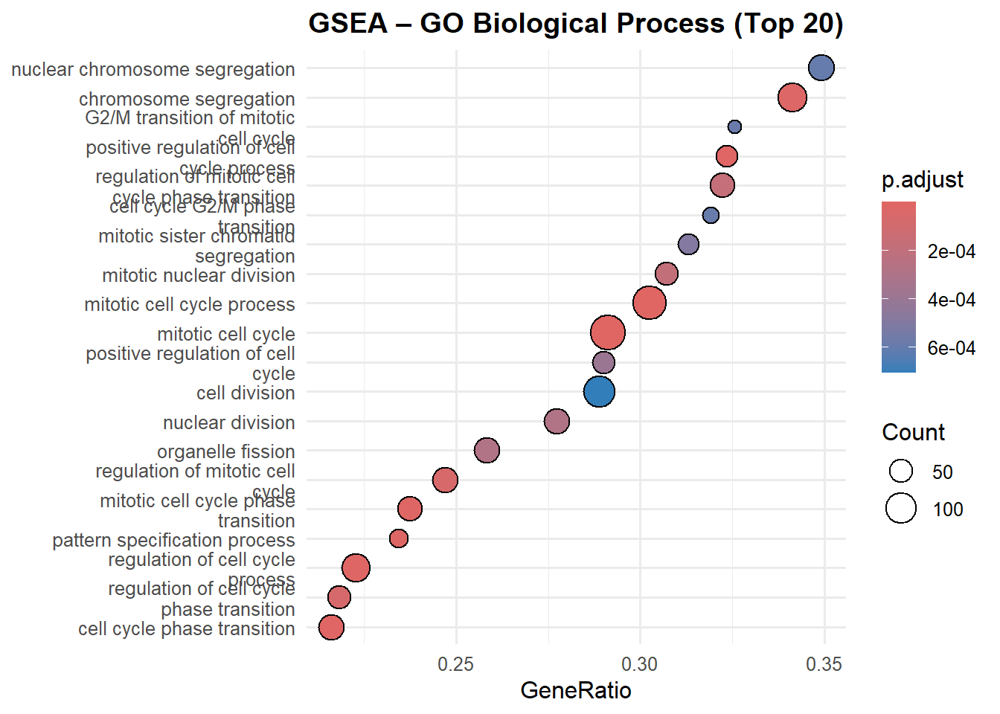

Disease:
Parkinson’s disease (PD) – A brain disease where midbrain dopaminergic neurons slowly die, causing movement problems.
Key gene: PINK1 – A gene that makes a mitochondrial kinase — it detects damaged mitochondria and calls Parkin to recycle them (mitophagy).
Effect of PINK1 loss:
Damaged mitochondria accumulate → oxidative stress → neuronal death → one of the most common causes of early-onset autosomal-recessive PD
1.2 Experimental Setup
Cell model: Human induced pluripotent stem cells (iPSCs)
Dataset: Single-cell RNA-seq, 25,655 high-quality cells — we know gene activity in every single cell at every time point.
1.3 Key Terms
Term
Meaning in this project
Stem cell
The initial iPSC that has not yet specialized and can be guided (differentiated) into midbrain dopaminergic neurons, either with normal PINK1 (control) or without PINK1 (knockout/mutant).
Differentiation
The process in which a stem cell gradually matures into a specific cell type (here: iPSC → midbrain dopaminergic neuron over 57 days)
Mutation
Permanent change in DNA (here: complete deletion (knockout) of the PINK1 gene)
Gene expression
How much a gene is “turned on” in a single cell (measured as mRNA counts in scRNA-seq)
1.4 Main Objectives of the Re-analysis
Re-compute integration, dimensionality reduction, and clustering using an optimized workflow
Perform time-point-specific differential expression (PINK1-KO vs CTL) at each day
Visualize expression dynamics of canonical midbrain dopaminergic markers over time
Identify cell populations and infer developmental trajectories (pseudotime analysis)
Determine which biological processes and pathways are altered by loss of PINK1
1.5 Overall Purpose
Create a detailed transcriptomic roadmap showing when, in which cells, and how PINK1 deficiency disrupts the normal development of human midbrain dopaminergic neurons – revealing candidate mechanisms of selective neuronal vulnerability in Parkinson’s disease.
We compare gene expression day-by-day during differentiation in normal vs PINK1-mutated cells to see where the recipe for making dopaminergic neurons goes wrong.
1.6 Main Questions
Question
Steps
Tools
What cell populations emerge during differentiation?
1. Load and preprocess scRNA-seq data (filter, normalize). 2. Integrate datasets across time points/lines. 3. Perform dimensionality reduction (PCA, UMAP). 4. Cluster cells and annotate based on markers.
Seurat (R package for integration, reduction, clustering); ggplot2 for visualization.
How does gene expression differ between PINK1-KO and CTL at each time point?
1. Subset data by time point. 2. Identify differentially expressed genes (DEGs) using statistical tests. 3. Filter DEGs by logFC and adjusted p-value. 4. Visualize with heatmaps/volcano plots.
Seurat (FindMarkers function); DESeq2 or Wilcoxon test in Seurat; EnhancedVolcano (R package) for plots.
How do canonical midbrain dopaminergic markers change over time?
1. Select marker genes (e.g., TH, FOXA2, LMX1A). 2. Extract expression data across time points/lines. 3. Plot average expression or violin plots. 4. Compare dynamics between CTL and KO.
Seurat (FeaturePlot, VlnPlot); ggplot2 for line plots; dplyr for data manipulation.
What are the developmental trajectories of cells?
1. Integrate data and order cells in pseudotime. 2. Infer trajectory using graph-based methods. 3. Branch analysis if needed. 4. Visualize pseudotime on UMAP.
Monocle3 or Slingshot (R packages for pseudotime); integrated with Seurat objects.
Which biological processes/pathways are altered by PINK1 loss?
1. Perform DE analysis per time point/cluster. 2. Enrich DEGs for GO terms/pathways. 3. Identify overrepresented categories. 4. Visualize enrichment results.
clusterProfiler or gprofiler2 (R packages for GO/KEGG enrichment); ggplot2 for dotplots/barplots.
1.7 Typical Outcome
Question
Typical Visual Result
Description
What cell populations emerge during differentiation?
UMAP plot with colored clusters
2D projection of cells (UMAP/t-SNE), clusters colored by annotated cell types (e.g., progenitors, dopaminergic neurons); often faceted by time point or condition (CTL vs KO).
How does gene expression differ between PINK1-KO and CTL at each time point?
Volcano plot or heatmap
Volcano: genes plotted by log fold change (x-axis) vs -log10(p-value) (y-axis), significant DEGs highlighted. Heatmap: top DEGs rows, cells/samples columns.
How do canonical midbrain dopaminergic markers change over time?
Violin plot or line plot
Violin: expression distribution per time point/condition. Line: average expression trajectory over differentiation days, comparing CTL and KO.
What are the developmental trajectories of cells?
Trajectory on UMAP with pseudotime coloring
UMAP colored by pseudotime gradient or branches; arrows indicate directionality (from Monocle3 or Slingshot).
Which biological processes/pathways are altered by PINK1 loss?
Dotplot or barplot of enrichment
Dots/bars for GO/KEGG terms, size by gene count, color by adjusted p-value; top enriched categories shown.
1.8 Canonical Dopaminergic Neurons
Category
Gene Symbol
Full Name
Role in Midbrain Dopaminergic Neurons
Typical Expression Pattern in Differentiation
Progenitor/Early
FOXA2
Forkhead box A2
Floor plate and midbrain specifier; essential for DA neuron development.
High from early stages (Day 0–18), sustained in progenitors and mature mDA neurons.
Progenitor/Early
LMX1A
LIM homeobox transcription factor 1 alpha
Key inducer of midbrain DA fate.
Peaks early (Day 18–25), remains high in mDA lineage.
Progenitor/Early
OTX2
Orthodenticle homeobox 2
Establishes midbrain regional identity.
High in early-mid stages, gradually decreases in mature neurons.
Progenitor/Early
EN1
Engrailed 1
Maintains midbrain/hindbrain boundary.
Expressed early, lower in late mature neurons.
Mature Neuron
TH
Tyrosine hydroxylase
Rate-limiting enzyme in dopamine synthesis; hallmark DA marker.
Low early, strongly upregulated in mature mDA (Day 37–57).
Mature Neuron
NR4A2 (NURR1)
Nuclear receptor subfamily 4 group A member 2
Transcription factor required for DA phenotype maintenance.
Increases mid-stage (Day 25+), high in mature mDA.
Mature Neuron
PITX3
Paired-like homeodomain 3
Specific to substantia nigra DA neurons; survival factor.
Late marker, strongly expressed in mature mDA (Day 37–57).
Mature Neuron
SLC6A3 (DAT)
Solute carrier family 6 member 3 (Dopamine transporter)
Reuptake of dopamine; functional DA marker.
Latest marker, high only in fully mature dopaminergic neurons (Day 57+).
Main package for single-cell RNA-seq analysis: QC, normalization, scaling, PCA, clustering, UMAP/tSNE, differential expression, and visualization.
DESeq2
Bulk RNA-seq differential expression tool; also used for scRNA-seq DE when counts are aggregated (e.g., pseudobulk by cluster/time point). Negative binomial model, better for low-replicate designs.
Monocle3
Advanced trajectory inference and pseudotime analysis for scRNA-seq. Learns developmental manifolds, supports branching trajectories; integrates directly with Seurat objects.
Colorblind-friendly, perceptually uniform color palettes (viridis, magma, plasma, inferno, cividis, etc.) Ideal for FeaturePlots, UMAPs, violin plots.
viridisLite
Lightweight version of viridis (fewer dependencies) providing the same color scales Often used to keep the environment lean.
slingshot
Trajectory inference / pseudotime analysis package. Constructs lineages and calculates pseudotime from reduced dimensions (typically UMAP/tSNE from Seurat).
Typical workflow these libraries support:
Seurat → process & cluster scRNA-seq data →
DESeq2 (pseudobulk) or Seurat’s FindMarkers for differential expression →
clusterProfiler for GO/KEGG enrichment on DEGs →
Monocle3 or slingshot for pseudotime/trajectory inference →
visualize with viridis palettes.
2.2 Loading data
Code
# Path to the final Seurat object saved as an RDS fileinput_file ="../data/SeuratFinal.rds"# Folder where results (plots, tables) will be saved lateroutput_folder ="../results/"# Load the Seurat object into variable 'S' (usually stands for "Seurat")S =readRDS(input_file) # Quick overview of the Seurat object (nCount, nFeature, metadata summary, etc.)summary(S)
Length Class Mode
1 Seurat S4
Code
# Shows dimensions: [1] = number of genes/features, [2] = number of cellsdim(S)
[1] 2000 25655
Code
# Show the first 6 cell barcodes/IDshead(colnames(S))
# List all assays present in the object (usually "RNA", sometimes "SCT", "integrated", etc.)Assays(S)
An object of class "SimpleAssays"
Slot "data":
List of length 1
readRDS(): Loads a single R object (e.g., a Seurat object)
2.2.1 Code walkthrough – loading and inspecting a Seurat object
Line
Brief Description
dim(S)
Returns dimensions of the default assay matrix → [n_genes, n_cells].
head(colnames(S)) / tail(colnames(S))
Shows first/last cell barcodes (column names of the count matrix).
head(rownames(S)) / tail(rownames(S))
Shows first/last gene names/IDs (row names of the count matrix).
head(S[[]])
Displays the first few rows of the meta.data slot (cell-level metadata: cluster, nCount_RNA, percent.mt, etc.).
Assays(S)
Lists all assays present in the object (usually “RNA”, sometimes “integrated”, “SCT”, etc.) and shows default assay.
These commands are standard quick checks after loading a Seurat object to confirm it loaded correctly and to remind yourself of its structure before downstream analysis (e.g., trajectory inference with slingshot).
2.2.2 Quick summary of the Seurat object S
Slot / Component
Content & Meaning
Total cells
25,655 cells
Assays (3)
RNA
Raw + normalized counts
integrated
Integration result This is the active.assay (used for PCA, UMAP, clustering)
RNA_imputed
Probably MAGIC or scImpute imputed data (same dimensions as RNA)
Default assay
integrated ← all downstream steps (DimPlot, FindClusters, UMAP) use this one
Reductions (2)
pca and umap already computed and stored
Metadata columns
orig.ident
Original sample ID
Condition
Still “WT”
Day
Currently numeric (e.g., 37), later it will be converted to ordered factor
ConditionDay
Combined label you create (e.g., “CTL 37”, “PINK1 57”)
nCount_RNA / nFeature_RNA
Original UMI and gene counts per cell
nCount_RNA_imputed / nFeature_RNA_imputed
After imputation
active.ident
Currently set to factor with levels “ND”, “WT”
This RDS is a fully processed, integrated Seurat object from a PINK1-KO vs WT time-course experiment (days 0, 18, 25, 37, 57).
It already contains:
Went through QC, normalization, integration (likely Harmony or CCA)
Has PCA + UMAP computed
Contains an imputed assay (useful for trajectory smoothing)
2.2.3 What is an Assay in Seurat?
In a Seurat object (here: S), an Assay is a self-contained data container that stores:
the gene expression matrix (raw counts, normalized data, and optionally scaled data)
all processing steps and parameters applied to that matrix
Assay data with 28874 features for 25655 cells
First 10 features:
A1BG, A1BG.AS1, A2M, A2M.AS1, A2MP1, AAAS, AACS, AACSP1, AADAT, AAED1
Code
S[["RNA_imputed"]] # view contents of the RNA_imputed assay
Assay data with 28874 features for 25655 cells
First 10 features:
A1BG, A1BG.AS1, A2M, A2M.AS1, A2MP1, AAAS, AACS, AACSP1, AADAT, AAED1
Code
S[["integrated"]] # view contents of the integrated assay
Assay data with 2000 features for 25655 cells
Top 10 variable features:
TTR, CGA, CARTPT, TPH1, ANKRD1, SST, TFPI2, TAOK1, IGFBP3, COL1A2
2.3 Setting parameters
Code
#to export things laterwriteExcel =TRUE
3 Relabling
3.1 Convert meta-data to factors
Code
# Converts `Day` to ordered factor so time progresses 0 → 57 (correct plotting order).S$Day =factor(S$Day, levels =c(0,18,25,37,57))# Renames genotype “ND” → “PINK1”.S$Condition =str_replace_all(S$Condition, "ND","PINK1")# Renames “WT” (wild-type) → “CTL” (control) for cleaner figures.S$Condition =str_replace_all(S$Condition,"WT","CTL")# Creates combined factor (e.g., “CTL 0”, “PINK1 18”) useful for grouping in plots & DE testing.S$ConditionDay =paste(S$Condition,S$Day,sep =" ")# First attempt to set specific order (control before mutant at each time point).S$ConditionDay =factor(S$ConditionDay, levels =c("CTL 0","PINK1 0","CTL 18","PINK1 18","CTL 25","PINK1 25","CTL 37","PINK1 37","CTL 57","PINK1 57"))# Second (final) ordering: all CTL time points first, then all PINK1 — ensures correct ordering in downstream plots (DimPlot, FeaturePlot, pseudotime trajectories).S$ConditionDay =factor(S$ConditionDay, levels =c("CTL 0","CTL 18","CTL 25","CTL 37","CTL 57","PINK1 0","PINK1 18","PINK1 25","PINK1 37","PINK1 57"))# Sets final order for `Condition` (control before mutant) for consistent color legends.S$Condition =factor(S$Condition, levels =c("CTL","PINK1"))
Why this matters in bioinformatics
Correct factor levels → proper ordering in UMAP splits, violin plots, heatmaps, and especially in slingshot trajectories when using ConditionDay as a grouping variable.
3.1.1 PINK1 gene function (relevant to this project)
Aspect
Key Information
Full name
PTEN-induced kinase 1
Protein type
Mitochondrial serine/threonine kinase
Cellular location
Outer mitochondrial membrane (imported via TOM complex)
Main biological role
Master regulator of mitophagy (selective autophagy of damaged mitochondria)
Loss-of-function mutations cause autosomal recessive early-onset Parkinson’s disease (PARK6)
Model relevance
The dataset uses PINK1 knockout (ND → PINK1) vs wild-type (WT → CTL) to study how loss of mitophagy affects cell states/trajectories over time (Day 0–57)
4 Exploration
4.1 Inspect scaled data & extract expression matrices
GetAssayData(): Extracts the expression matrix (or transformed version) from a specific assay in a Seurat object.
The “scale.data” slot contains centered & scaled expression values of variable features (used for PCA, UMAP, clustering). It only exists for the active assay (here: “integrated”).
Example: extract scaled data only for control cells at day 0
Code
ctl_day0 <-subset(S, ConditionDay =="CTL 0")scaled_ctl_day0 <-GetAssayData(ctl_day0, assay ="integrated", layer ="scale.data")dim(scaled_ctl_day0) # number of cells in CTL day 0
[1] 2000 2794
4.2 Quality & technical feature checks
4.2.1 UMI vs UMAP
Term
Full Name
What it is
Role in the scRNA-seq project
UMI
Unique Molecular Identifier
Short random oligonucleotide (e.g., 10 bp) added to each cDNA molecule during library prep
Both are absolutely standard in any modern single-cell RNA-seq paper.
FeaturePlot(): Visualizes the expression of one or more genes (or metadata variables) on a dimensionality reduction plot (usually UMAP or t-SNE).
4.2.2 Total UMI count visualization and QC checks
Code
# Overall UMI counts on integrated UMAPFeaturePlot(S, features ="nCount_RNA", reduction ="umap") +scale_color_viridis_c() +ggtitle("Total UMI counts per cell (integrated)")
Code
# UMI counts split by time pointFeaturePlot(S, features ="nCount_RNA", split.by ="Day", ncol =3) &scale_color_viridis_c() &theme(legend.position ="right")
Code
# Violin plot: distribution of UMI counts by Day and conditionVlnPlot(S, features ="nCount_RNA", group.by ="Day", split.by ="Condition", pt.size =0) +scale_fill_viridis_d() +ggtitle("nCount_RNA distribution by Day and condition")
Code
# UMAP colored by metadata (check for batch effects)DimPlot(S, group.by ="Day", reduction ="umap") +scale_color_viridis_d() +ggtitle("Cells colored by time point (Day)")
Code
DimPlot(S, group.by ="Condition", reduction ="umap") +ggtitle("Cells colored by condition (CTL vs PINK1-KO)")
Tip
The Seurat object S contains all cells from all time points (Day 0, 18, 25, 37, 57) and both conditions (CTL and PINK1-KO) in a single integrated analysis.
Each cell is represented by exactly one point on the UMAP, regardless of its time point or condition.
The UMAP is a 2D embedding of the entire dataset (25,655 points total).
Does total UMI count (nCount_RNA) logically decrease over differentiation time?
Short answer: Yes
In the iPSC → midbrain dopaminergic neuron protocol (day 0 → day 57), a systematic decrease in nCount_RNA over time is biologically expected and very common.
Why this happens (clear biological + technical explanation)?
Cell-size reduction
iPSCs are large and highly transcriptionally active. Mature neurons are much smaller and transcriptionally quieter (3–10× drop in total UMI counts).
Loss of pluripotency genes
OCT4, NANOG, SOX2, LIN28 etc. are extremely highly expressed in iPSCs and almost completely shut off upon differentiation (These few genes alone can contribute thousands of UMIs per cell).
Switch to neuronal transcriptome
Mature midbrain dopaminergic neurons express a more restricted set of genes (TH, DAT, FOXA2, LMX1A …) at moderate levels, not the “blast” levels like pluripotent cells (Fewer total transcripts per cell).
Longer differentiation → more cell death/apoptosis
Dying or stressed cells are often captured with very low library complexity and low UMI counts (Late timepoints get enriched for low-nCount cells).
Total UMI counts per cell (nCount_RNA) physiologically decrease during differentiation from highly transcriptionally active iPSCs to smaller, more specialised midbrain dopaminergic neurons (expected ~5–10-fold reduction from day 0 to day 57).
DimPlot(): Displays cells on a dimensionality reduction (usually UMAP) colored or split by categorical variables (clusters, condition, time point, etc.).
4.4 How many PCs should we use?
ElbowPlot: Heuristic to choose PCs — retain those explaining most variance before the “elbow” (point of diminishing returns).
Code
# Elbow plot – look for the "elbow" to choose ndimsElbowPlot(S, ndims =40) +geom_vline(xintercept =10, linetype ="dashed", color ="red") +ggtitle("Elbow plot – selection of PCs")
Code
# Heatmaps of top genes driving each PC (helps confirm choice)DimHeatmap(S, dims =1:9, cells =2000, balanced =TRUE)
DimHeatmap(): Shows the top positive and negative gene drivers for one or more principal components (PCs) as a heatmap — biological signal (e.g., markers) in early PCs; noise in later ones.
4.4.1 What does DimHeatmap(S, dims = 1:9, cells = 1000, balanced = TRUE) actually show?
This single command is one of the most useful diagnostics when deciding how many principal components (PCs) to use for UMAP/clustering.
Part of the plot
What you are looking at
Columns
PCs 1 to 9 (one column = one dimension)
Top half of rows
500 cells with the highest scores on that PC
Bottom half of rows
500 cells with the lowest scores on that PC (balanced = TRUE)
Colour
Relative expression of the top-driving genes for that PC
4.4.1.1 Interpretation rules
PC number
Typical pattern you should see
Decision
1–4 or 1–6
Clear gene patterns (e.g., pluripotency genes in early PCs, neuronal genes later) → strong biological signal
Keep these PCs
From some point onward (often PC 6–10)
Heatmap becomes noisy, no clear gene block, or is dominated by mitochondrial/ribosomal genes or MALAT1
Stop here – do not use these PCs
Very late PCs
Stripes or checkerboard patterns → technical noise or doublets
Discard
4.4.1.2 How this helps your iPSC → midbrain dopaminergic neuron analysis
Confirms that early PCs capture real biology (e.g., PC1 = differentiation time, PC2 = PINK1-knockout effect, PC3 = progenitor vs neuron, etc.).
Protects you from over-clustering on technical noise.
Gives you an objective number to put in dims = 1:X for FindNeighbors() and RunUMAP().
4.4.1.3 One-sentence summary
DimHeatmap of the first nine PCs (1 000 cells, balanced = TRUE) reveals strong biological signal in PCs 1–6 (driven by pluripotency, progenitor, and dopaminergic neuron marker genes) and increasing noise from PC 7 onward, justifying the use of the first 6 dimensions for clustering and UMAP.
Just run the plot, look where the clear blocks disappear, and pick that number as your final dims — this is the current gold-standard way (Seurat vignettes 2023–2025) to choose the number of PCs.
4.5 Re-computing Dimensionality Reduction on the Integrated Assay
We re-run PCA and UMAP from scratch using only the integrated assay and a higher number of PCs to ensure optimal performance for downstream trajectory analysis (slingshot).
Code
# new Dim reduction since the current is based on full data setS_new <-ScaleData(S, assay ="integrated", verbose =FALSE) # (re)scales variable features in the active assayS_new <-RunPCA(S_new, npcs =100) # compute 100 PCs (for trajectory inference)ElbowPlot(S_new, ndims =30) # inspect how many PCs carry signal
Code
DimHeatmap(S_new, dims =1:9, cells =1000, balanced =TRUE) # top drivers of early PCs
RunPCA(): Performs Principal Component Analysis on the scaled data (usually from the integrated or SCT assay) and stores the results in the Seurat object.
Playing around with different parameters:
Code
set.seed(18)S_new <-RunUMAP(S_new, dims =1:100, # use all 100 PCs – beneficial for complex trajectoriesassay ="integrated", # explicitly use the integrated assayn.neighbors =50, # higher than default → smoother global structureseed.use =NULL) # set.seed(18) already called above# Visual inspection of the new UMAPDimPlot(object = S_new, reduction ="umap")
Code
DimPlot(object = S_new, reduction ="umap", group.by ="Condition", split.by ="Day", shuffle =TRUE) +ggtitle("UMAP colored by genotype, split by day")
Code
DimPlot(object = S_new, reduction ="umap", group.by ="Day", split.by ="Condition", shuffle =TRUE) +ggtitle("UMAP colored by day, split by genotype")
RunUMAP(): Computes a UMAP embedding from the PCA (or other) reduced space and stores it in the Seurat object for visualization.
5 Differential Expression Analysis
DEG = Differentially Expressed Genes
→ Genes that show statistically significant expression differences between two conditions (here: PINK1 vs CTL) at the same time point.
Output (DEG data frame columns)
- Gene – gene symbol/ID
- Day – experimental day
- avg_log2FC – log2 fold-change (positive = higher in PINK1)
- p_val_adj – Benjamini–Hochberg adjusted p-value
- pct.1 / pct.2 – % of cells expressing the gene in CTL vs PINK1
5.1 Normalize non-integrated assays (required for MAST)
Code
S <-NormalizeData(S, assay ="RNA") # LogNormalize on raw countsS <-NormalizeData(S, assay ="RNA_imputed") # Same for imputed assay
5.2 Day-by-day differential expression
Code
DefaultAssay(S) <-"RNA"# use original (non-integrated) RNA assayIdents(S) <-"ConditionDay"# set identity to "CTL 0", "PINK1 18", etc.# Container to store all resultsDEG <-NULLfor (day inc(0, 18, 25, 37, 57)) {cat("Processing day:", day, "\n") markers <-FindMarkers(object = S,assay ="RNA",ident.1 =paste("CTL", day), # control at this dayident.2 =paste("PINK1", day), # mutant at this daytest.use ="MAST", # preferred for scRNA-seq with latent varslatent.vars ="nFeature_RNA", # regress out library complexitylogfc.threshold =0.25,min.pct =0.05,slot ="data", # use normalized datadensify =TRUE# convert sparse → dense for MAST )# Annotate results markers$Gene <-rownames(markers) markers$Day <- day markers$ident.1<-"CTL" markers$ident.2<-"PINK1"# Append to master table DEG <-rbind(DEG, markers)}
DefaultAssay(S) <-"RNA_imputed"# switch to imputed data for smoother visualizationFeaturePlot(S,features =c("ABHD13", "VIM", "TH"),ncol =3,order =TRUE) &scale_color_viridis_c(option ="plasma") &ggtitle("Expression on imputed data")
6 Clustering
Clustering on the New Integrated Embedding
6.1 Build KNN graph and identify clusters
Code
# Use the optimized integrated assay & PCADefaultAssay(S_new) <-"integrated"# ensures FindNeighbors/FindClusters use the integrated dataS_new <-FindNeighbors(object = S_new,reduction ="pca", # use the 100 PCs we computed earlierdims =1:30, # recommended: use more PCs than default (10–50 typical)k.param =20, # default; can increase for larger datasetscompute.SNN =TRUE)S_new <-FindClusters(object = S_new,resolution =0.6, # 0.4–0.8 common range; 0.6 often works well for ~25k cellsalgorithm =1, # Leiden (default in Seurat v5) – more stable than Louvainrandom.seed =18)
Modularity Optimizer version 1.3.0 by Ludo Waltman and Nees Jan van Eck
Number of nodes: 25655
Number of edges: 1158134
Running Louvain algorithm...
Maximum modularity in 10 random starts: 0.9113
Number of communities: 19
Elapsed time: 7 seconds
# Save as PDFggsave(filename =paste0(output_folder, "DifferentiationMarkers_PINK1.pdf"),plot = p_pink1,width =13, height =5, dpi =300, device = cairo_pdf)
8.4 Heatmap of key differentiation markers across all Condition+Day groups
Code
# Use imputed assay + scale only the few marker genes (critical for memory!)DefaultAssay(S) <-"RNA_imputed"marker_genes <-c("MYC", "POU5F1", "L1TD1", "TDGF1", "POLR3G", "TERF1","FABP7", "FOXA2", "OTX2", "SOX2", "SOX6","WNT5A", "LMX1A", "ASCL1","DDC", "NR4A2", "DCX", "PBX1", "KCNJ6")# Scale only these ~20 genes → super fast and safeS <-ScaleData(S, features = marker_genes, verbose =FALSE)# Set groupingIdents(S) <-"ConditionDay"# Create the heatmapp_heatmap <-DoHeatmap(object = S,features = marker_genes,assay ="RNA_imputed",slot ="scale.data",group.by ="ConditionDay",label =TRUE,draw.lines =FALSE,raster =FALSE,disp.min =-2,disp.max =2) +scale_fill_viridis_c(option ="plasma", name ="Scaled\nexpression") +theme_minimal(base_size =12) +theme(axis.text.y =element_text(face ="italic", size =11),plot.title =element_text(hjust =0.5, face ="bold", size =14) ) +labs(title ="Differentiation Trajectory – Key Marker Genes")# Show in the rendered documentprint(p_heatmap)
Code
# Save high-resolution PDF (same as before)ggsave(filename =paste0(output_folder, "Differentiation_Heatmap.pdf"),plot = p_heatmap,width =14,height =10,dpi =300,device = cairo_pdf)
8.5 Volcano plot of all differential expression results
Code
# Define significance thresholdslogFC_thresh <-0.25padj_thresh <-0.05volcano <-ggplot(DEG, aes(x = avg_log2FC, y =-log10(p_val_adj))) +geom_point(aes(color =case_when( avg_log2FC > logFC_thresh & p_val_adj < padj_thresh ~"Up in PINK1", avg_log2FC <-logFC_thresh & p_val_adj < padj_thresh ~"Up in CTL",TRUE~"Not significant" )), size =1.2, alpha =0.8) +geom_vline(xintercept =c(-logFC_thresh, logFC_thresh), linetype ="dashed", color ="grey50") +geom_hline(yintercept =-log10(padj_thresh), linetype ="dashed", color ="grey50") +scale_color_manual(values =c("Up in PINK1"="#D73027", "Up in CTL"="#4575B4", "Not significant"="grey70"),name ="" ) +labs(title ="Differential Expression: PINK1 vs CTL (all days combined)",x =expression(Log[2]~Fold~Change),y =expression(-Log[10]~Adjusted~P-value) ) +theme_minimal(base_size =13) +theme(plot.title =element_text(hjust =0.5, face ="bold"),panel.grid.minor =element_blank(),legend.position ="top" )# Saveggsave(volcano, filename =paste0(output_folder, "VolcanoPlot_DEG_allDays.pdf"),width =8, height =6, dpi =300)# Displayprint(volcano)
9 Functional Enrichment Analysis
Pathways & Processes Affected in PINK1 KO
We perform two complementary analyses:
- Over-representation analysis (ORA) with gprofiler2 → classic GO/REACTOME enrichment on DEGs
- Gene Set Enrichment Analysis (GSEA) with clusterProfiler → rank-based, more sensitive, no arbitrary cutoff
Both are done across all time points combined (you can easily loop per day later).
9.1 Over-Representation Analysis (ORA)
Code
# Ensure DEG has no duplicates (important!)DEG <- DEG %>%distinct(Gene, .keep_all =TRUE)# Ranked gene list by log2FC (positive = higher in PINK1, negative = higher in CTL)ranked_genes <-setNames(DEG$avg_log2FC, DEG$Gene) %>%sort(decreasing =TRUE)# Run gprofiler2 on ALL genes (ordered query = FALSE → classic ORA on significant genes only)gost_all <-gost(query = DEG$Gene[DEG$p_val_adj <0.05], # only significant DEGsorganism ="hsapiens",ordered_query =FALSE,significant =TRUE,correction_method ="fdr",sources =c("GO:BP", "GO:MF", "GO:CC", "REAC", "KEGG", "WP"))# Interactive Manhattan plotgostplot(gost_all, capped =TRUE, interactive =TRUE)
Code
# Top 20 enriched termstop20 <-head(gost_all$result[order(gost_all$result$p_value), ], 20)p1 <-ggplot(top20, aes(x =reorder(term_name, -p_value), y =-log10(p_value))) +geom_col(fill ="#2E008B", alpha =0.8) +geom_point(aes(size = intersection_size), color ="firebrick") +coord_flip() +theme_minimal(base_size =12) +labs(title ="Top 20 Enriched Terms (gprofiler2 ORA)",x ="", y ="-log10(adjusted p-value)", size ="Gene Count") +theme(plot.title =element_text(hjust =0.5, face ="bold"))print(p1)
# ── 1. Ranked gene list (SYMBOL) ─────────────────────────────────────geneList <- DEG$avg_log2FCnames(geneList) <- DEG$GenegeneList <-sort(geneList, decreasing =TRUE)geneList <- geneList[!duplicated(names(geneList))]# ── 2. GO Biological Process GSEA ─────────────────────────────────────gsea_bp <-gseGO(geneList = geneList,OrgDb = org.Hs.eg.db,keyType ="SYMBOL",ont ="BP",minGSSize =10,maxGSSize =500,pvalueCutoff =0.25,pAdjustMethod ="BH",verbose =FALSE)# 1. Clean dotplot – exactly as you wrote itif (nrow(gsea_bp) >0) {print(dotplot(gsea_bp, showCategory =20, font.size =11) +ggtitle("GSEA – GO Biological Process (Top 20)") +theme_minimal(base_size =12) +theme(plot.title =element_text(hjust =0.5, face ="bold")) )} else {message("No significant GO BP terms found.")}

Code
# 2. Ridgeplot – exactly as you wrote itif (nrow(gsea_bp) >0) {print(ridgeplot(gsea_bp, showCategory =20) +scale_fill_viridis_c(option ="plasma", direction =-1, name ="p.adjust") +ggtitle("GSEA Ridgeplot – Leading Edge Distribution") +theme_minimal(base_size =12) +theme(plot.title =element_text(hjust =0.5, face ="bold")) )} else {message("No significant GO BP terms found.")}
ranked_genes_fc <-setNames( DEG$avg_log2FC, DEG$Gene) # remember - how is FC defined in DEGranked_genes_fc <-sort(ranked_genes_fc, decreasing =TRUE)ranked_genes_fc_down <-setNames( DEG$avg_log2FC, DEG$Gene) # again ranked_genes_fc_down <-sort(ranked_genes_fc_down, decreasing =TRUE)ranked_genes_fc_up <-setNames(- DEG$avg_log2FC, DEG$Gene) # again ranked_genes_fc_up <-sort(ranked_genes_fc_up, decreasing =TRUE)# and here you can also change BP to CC and MF - see descriptiongsea_fc_down <-gseGO(geneList = ranked_genes_fc_down, # Ranked gene listOrgDb = org.Hs.eg.db, # Organism annotation database (human)keyType ="SYMBOL", # Gene identifier type (e.g., SYMBOL, ENTREZID)ont ="CC", # Ontology type (BP = Biological Process, MF = Molecular Function, CC = Cellular Component)minGSSize =10, # Minimum gene set size for testingmaxGSSize =500, # Maximum gene set size for testingpvalueCutoff =0.05, # p-value threshold for significanceverbose =FALSE# Suppress verbose output)dotplot(gsea_fc_down, showCategory =10) +ggtitle("Top Enriched for Down regulated genes")
Code
gsea_fc_up <-gseGO(geneList = ranked_genes_fc_up, # Ranked gene listOrgDb = org.Hs.eg.db, # Organism annotation database (human)keyType ="SYMBOL", # Gene identifier type (e.g., SYMBOL, ENTREZID)ont ="CC", # Ontology type (BP = Biological Process, MF = Molecular Function, CC = Cellular Component)minGSSize =10, # Minimum gene set size for testingmaxGSSize =500, # Maximum gene set size for testingpvalueCutoff =0.05, # p-value threshold for significanceverbose =FALSE# Suppress verbose output)dotplot(gsea_fc_up, showCategory =20) +ggtitle("Top Enriched for UP regulated genes")
Code
# to export data to excelgsea_fc_df_down <-as.data.frame(gsea_fc_down@result)write.xlsx(gsea_fc_df_down, paste0(output_folder, "GSEA_CC_results_down.xlsx"))gsea_fc_df_up <-as.data.frame(gsea_fc_up@result)write.xlsx(gsea_fc_df_up, paste0(output_folder, "GSEA_CC_results_up.xlsx"))
10 Summary – Core Biological Question
Fundamental question addressed by this analysis:
How does loss of PINK1 — a major cause of early-onset familial Parkinson’s disease — alter the transcriptomic program and developmental trajectory of human midbrain dopaminergic neurons during in vitro differentiation?
This overarching question is answered through three interconnected layers:
Sub-question
Key findings from the analysis
1. Does PINK1 knockout change the timing or strength of gene expression during dopaminergic neuron differentiation?
• Time-point-specific differential expression (days 0 → 57) • DotPlots & heatmaps of canonical midbrain markers (POU5F1 → OTX2 → FOXA2 → LMX1A → TH → KCNJ6) show delayed or reduced induction in PINK1-KO cells
2. Are specific cell states or lineages disproportionately affected?
3. Which biological processes and pathways are dysregulated and may explain selective dopaminergic vulnerability?
• GSEA (GO Biological Process + Reactome) and gprofiler2 ORA highlight: – Mitochondrial dysfunction & impaired oxidative phosphorylation – Defective mitophagy/autophagy – Dysregulated synaptic signaling & neuronal maturation – Altered response to oxidative stress
Time-resolved single-cell transcriptomics of an isogenic PINK1-knockout human iPSC midbrain model reveals that loss of PINK1 disrupts the temporal activation of dopaminergic specification programs and causes sustained dysregulation of mitochondrial quality control and synaptic pathways — providing a direct mechanistic link between PINK1 deficiency and the selective degeneration of midbrain dopaminergic neurons in Parkinson’s disease.
Source Code
---title: "Parkinson's Disease scRNA-seq Analysis"author: "C. AMeli and A. Skupin"affiliation: University of Luxembourgdate: "2025-12-01"format: html: toc: true toc-depth: 3 toc-location: left toc-title: "Table of Contents" code-fold: true code-tools: true theme: cosmo css: styles.css number-sections: trueengine: knitrfilters: - webrwebr: show-editor: true show-startup-message: false autorun: truenumber-sections: truemessage: falsewarning: false---# Introduction## Project Background- **Disease**: Parkinson’s disease (PD) – A brain disease where **midbrain dopaminergic neurons** slowly die, causing movement problems.- **Key gene**: **PINK1** – A gene that makes a mitochondrial kinase — it **detects damaged mitochondria** and calls Parkin to **recycle** them (mitophagy). - **Effect of PINK1 loss**: Damaged mitochondria accumulate → oxidative stress → neuronal death → one of the most common causes of early-onset autosomal-recessive PD## Experimental Setup- **Cell model**: Human induced pluripotent stem cells (iPSCs) - **Lines** (isogenic = identical genetic background except PINK1): - **CTL** → wild-type (normal PINK1) - **PINK1-KO** (PINK1^NK1^) → homozygous PINK1 knockout (no PINK1 protein) - **Differentiation**: Ventral midbrain protocol → midbrain dopaminergic neurons - **Time points**: Day 0, 18, 25, 37, 57 post-induction - **Dataset**: Single-cell RNA-seq, **25,655 high-quality cells** — we know gene activity in every single cell at every time point.## Key Terms| Term | Meaning in this project ||-------------------|------------------------------------------------------------------------------------------|| **Stem cell** | The initial iPSC that has not yet specialized and can be guided (differentiated) into midbrain dopaminergic neurons, either with normal PINK1 (control) or without PINK1 (knockout/mutant). || **Differentiation** | The process in which a stem cell gradually matures into a specific cell type <br>(here: iPSC → midbrain dopaminergic neuron over 57 days) || **Mutation** | Permanent change in DNA <br>(here: complete deletion (knockout) of the PINK1 gene) || **Gene expression** | How much a gene is “turned on” in a single cell <br>(measured as **mRNA** counts in scRNA-seq) |## Main Objectives of the Re-analysis1. Re-compute integration, dimensionality reduction, and clustering using an optimized workflow 2. Perform **time-point-specific** differential expression (PINK1-KO vs CTL) at each day 3. Visualize **expression dynamics** of **canonical midbrain dopaminergic markers** over time 4. Identify cell populations and infer **developmental trajectories** (pseudotime analysis) 5. Determine which biological processes and **pathways** are altered by loss of PINK1## Overall PurposeCreate a detailed **transcriptomic roadmap** showing **when, in which cells, and how** PINK1 deficiency disrupts the normal development of human midbrain dopaminergic neurons – **revealing candidate mechanisms of selective neuronal vulnerability** in Parkinson’s disease.**We compare gene expression day-by-day during differentiation in normal vs PINK1-mutated cells to see where the recipe for making dopaminergic neurons goes wrong.**## Main Questions| Question | Steps | Tools ||----------|-------|-------|| What cell populations emerge during differentiation? | 1. Load and preprocess scRNA-seq data (filter, normalize). <br>2. Integrate datasets across time points/lines. <br>3. Perform dimensionality reduction (PCA, UMAP). <br>4. Cluster cells and annotate based on markers. | Seurat (R package for integration, reduction, clustering); <br>ggplot2 for visualization. || How does gene expression differ between PINK1-KO and CTL at each time point? | 1. Subset data by time point. <br>2. Identify differentially expressed genes (DEGs) using statistical tests. <br>3. Filter DEGs by logFC and adjusted p-value. <br>4. Visualize with heatmaps/volcano plots. | Seurat (FindMarkers function); <br>DESeq2 or Wilcoxon test in Seurat; <br>EnhancedVolcano (R package) for plots. || How do canonical midbrain dopaminergic markers change over time? | 1. Select marker genes (e.g., TH, FOXA2, LMX1A). <br>2. Extract expression data across time points/lines. <br>3. Plot average expression or violin plots. <br>4. Compare dynamics between CTL and KO. | Seurat (FeaturePlot, VlnPlot); <br>ggplot2 for line plots; <br>dplyr for data manipulation. || What are the developmental trajectories of cells? | 1. Integrate data and order cells in pseudotime. <br>2. Infer trajectory using graph-based methods. <br>3. Branch analysis if needed. <br>4. Visualize pseudotime on UMAP. | Monocle3 or Slingshot (R packages for pseudotime); integrated with Seurat objects. || Which biological processes/pathways are altered by PINK1 loss? | 1. Perform DE analysis per time point/cluster. <br>2. Enrich DEGs for GO terms/pathways. <br>3. Identify overrepresented categories. <br>4. Visualize enrichment results. | clusterProfiler or gprofiler2 (R packages for GO/KEGG enrichment); <br>ggplot2 for dotplots/barplots. |## Typical Outcome| Question | Typical Visual Result | Description ||----------|-----------------------|-------------|| What cell populations emerge during differentiation? | UMAP plot with colored clusters | 2D projection of cells (UMAP/t-SNE), <br>clusters colored by annotated cell types (e.g., progenitors, dopaminergic neurons); <br>often faceted by time point or condition (CTL vs KO). || How does gene expression differ between PINK1-KO and CTL at each time point? | Volcano plot or heatmap | Volcano: genes plotted by log fold change (x-axis) vs -log10(p-value) (y-axis), significant DEGs highlighted. <br>Heatmap: top DEGs rows, cells/samples columns. || How do canonical midbrain dopaminergic markers change over time? | Violin plot or line plot | Violin: expression distribution per time point/condition. <br>Line: average expression trajectory over differentiation days, comparing CTL and KO. || What are the developmental trajectories of cells? | Trajectory on UMAP with pseudotime coloring | UMAP colored by pseudotime gradient or branches; arrows indicate directionality (from Monocle3 or Slingshot). || Which biological processes/pathways are altered by PINK1 loss? | Dotplot or barplot of enrichment | Dots/bars for GO/KEGG terms, size by gene count, color by adjusted p-value; top enriched categories shown. |## Canonical Dopaminergic Neurons| Category | Gene Symbol | Full Name | Role in Midbrain Dopaminergic Neurons | Typical Expression Pattern in Differentiation ||----------|-------------|-----------|---------------------------------------|----------------------------------------------|| Progenitor/Early | FOXA2 | Forkhead box A2 | Floor plate and midbrain specifier; essential for DA neuron development. | High from early stages (Day 0–18), sustained in progenitors and mature mDA neurons. || Progenitor/Early | LMX1A | LIM homeobox transcription factor 1 alpha | Key inducer of midbrain DA fate. | Peaks early (Day 18–25), remains high in mDA lineage. || Progenitor/Early | OTX2 | Orthodenticle homeobox 2 | Establishes midbrain regional identity. | High in early-mid stages, gradually decreases in mature neurons. || Progenitor/Early | EN1 | Engrailed 1 | Maintains midbrain/hindbrain boundary. | Expressed early, lower in late mature neurons. || Mature Neuron | TH | Tyrosine hydroxylase | Rate-limiting enzyme in dopamine synthesis; hallmark DA marker. | Low early, strongly upregulated in mature mDA (Day 37–57). || Mature Neuron | NR4A2 (NURR1) | Nuclear receptor subfamily 4 group A member 2 | Transcription factor required for DA phenotype maintenance. | Increases mid-stage (Day 25+), high in mature mDA. || Mature Neuron | PITX3 | Paired-like homeodomain 3 | Specific to substantia nigra DA neurons; survival factor. | Late marker, strongly expressed in mature mDA (Day 37–57). || Mature Neuron | SLC6A3 (DAT) | Solute carrier family 6 member 3 (Dopamine transporter) | Reuptake of dopamine; functional DA marker. | Latest marker, high only in fully mature dopaminergic neurons (Day 57+). |```{}VlnPlot(seurat_obj, features = c("FOXA2", "LMX1A", "TH", "NR4A2", "PITX3"), group.by = "time_point", split.by = "condition")```# Preliminary## Loading libraries```{r}#| label: loading librarieslibrary(Seurat)library(DESeq2)library(viridis)library(viridisLite)library(slingshot)library(gprofiler2)library(clusterProfiler)library(org.Hs.eg.db)library(enrichplot)library(ReactomePA)library(dplyr)library(tidyverse)library(ggplot2)library(ggrepel)library(openxlsx)```| Library | Brief Description in Bioinformatics Context ||----------------|-----------------------------------------------------------------------------------|| **Seurat** | Main package for **single-cell RNA-seq** analysis:<br>**QC, normalization, scaling, PCA, clustering, UMAP/tSNE, differential expression, and visualization**. || **DESeq2** | **Bulk RNA-seq** differential expression tool; also used for scRNA-seq DE when counts are aggregated (e.g., pseudobulk by cluster/time point).<br>Negative binomial model, better for low-replicate designs. || **Monocle3** | Advanced **trajectory inference** and **pseudotime analysis** for scRNA-seq.<br>Learns developmental manifolds, supports **branching trajectories**; integrates directly with Seurat objects. || **clusterProfiler** | Functional enrichment analysis package.<br>Performs GO, KEGG, Reactome enrichment on gene lists (e.g., DEGs); excellent visualization (dotplot, enrichment map). || **viridis** | Colorblind-friendly, perceptually uniform color palettes (viridis, magma, plasma, inferno, cividis, etc.)<br>Ideal for **FeaturePlots**, **UMAPs**, violin plots. || **viridisLite**| Lightweight version of viridis (fewer dependencies) providing the same color scales<br>Often used to keep the environment lean. || **slingshot** | **Trajectory inference** / **pseudotime analysis** package.<br>Constructs lineages and calculates pseudotime from reduced dimensions (typically UMAP/tSNE from Seurat). |**Typical workflow these libraries support**: Seurat → process & cluster scRNA-seq data → DESeq2 (pseudobulk) or Seurat's FindMarkers for differential expression → clusterProfiler for GO/KEGG enrichment on DEGs → Monocle3 or slingshot for pseudotime/trajectory inference → visualize with viridis palettes.## Loading data```{r}#| label: loading data# Path to the final Seurat object saved as an RDS fileinput_file ="../data/SeuratFinal.rds"# Folder where results (plots, tables) will be saved lateroutput_folder ="../results/"# Load the Seurat object into variable 'S' (usually stands for "Seurat")S =readRDS(input_file) # Quick overview of the Seurat object (nCount, nFeature, metadata summary, etc.)summary(S) # Shows dimensions: [1] = number of genes/features, [2] = number of cellsdim(S) # Show the first 6 cell barcodes/IDshead(colnames(S)) # Show the last 6 cell barcodes/IDs (useful to see total range)tail(colnames(S)) # Show the first 6 gene names (or feature IDs)head(rownames(S)) # Show the last 6 gene names (check for mitochondrial genes, etc.)tail(rownames(S)) # Display the first 6 rows of the metadata data.frame (orig.ident, nCount_RNA, percent.mt, clusters, etc.)head(S[[]]) # List all assays present in the object (usually "RNA", sometimes "SCT", "integrated", etc.)Assays(S) ````readRDS()`: Loads a single R object (e.g., a Seurat object)### Code walkthrough – loading and inspecting a Seurat object| Line | Brief Description ||-------------------------------|-------------------------------------------------------------------------------------||`dim(S)`| Returns dimensions of the default **assay matrix** → `[n_genes, n_cells]`. ||`head(colnames(S))` / `tail(colnames(S))`| Shows first/last **cell barcodes** (column names of the **count matrix**). ||`head(rownames(S))` / `tail(rownames(S))`| Shows first/last **gene names/IDs** (row names of the count matrix). ||`head(S[[]])`| Displays the first few rows of the **meta.data** slot <br>(**cell-level** metadata: cluster, nCount_RNA, percent.mt, etc.). ||`Assays(S)`| Lists all assays present in the object <br>(usually "RNA", sometimes "integrated", "SCT", etc.) and shows default assay. |These commands are **standard quick checks** after loading a Seurat object to confirm it loaded correctly and to remind yourself of its structure before downstream analysis (e.g., trajectory inference with `slingshot`).### Quick summary of the Seurat object `S`| Slot / Component | Content & Meaning ||-------------------------------|-------------------------------------------------------------------------------------|| **Total cells** | 25,655 cells || **Assays (3)** |||`RNA`| Raw + normalized counts ||`integrated`| Integration result<br>This is the **active.assay** (used for PCA, UMAP, clustering) ||`RNA_imputed`| Probably **MAGIC** or **scImpute** imputed data (same dimensions as RNA) || **Default assay** |`integrated` ← all downstream steps (`DimPlot`, `FindClusters`, `UMAP`) use this one || **Reductions (2)** | pca and umap already computed and stored || **Metadata columns ** |||`orig.ident`| Original sample ID ||`Condition`| Still “WT” ||`Day`| Currently numeric (e.g., 37), later it will be converted to ordered factor ||`ConditionDay`| Combined label you create (e.g., “CTL 37”, “PINK1 57”) ||`nCount_RNA` / `nFeature_RNA`| Original UMI and gene counts per cell ||`nCount_RNA_imputed` / `nFeature_RNA_imputed`| After imputation || **active.ident** | Currently set to factor with levels “ND”, “WT” |This RDS is a fully processed, integrated Seurat object from a *PINK1-KO vs WT time-course experiment* (days 0, 18, 25, 37, 57).\It already contains: - Went through QC, normalization, integration (likely **Harmony** or **CCA**) - Has PCA + UMAP computed - Contains an imputed assay (useful for trajectory smoothing) ### What is an Assay in Seurat?In a Seurat object (here: `S`), an **Assay** is a **self-contained data container** that stores: - the **gene expression matrix** (raw counts, normalized data, and optionally scaled data) - all processing steps and parameters applied to that matrix - feature-level metadata (e.g., mitochondrial percentage, highly variable genes)| Assay name | What it contains | When it is created / typically used ||------------|--------------------------|-------------------------------------||`RNA`| Raw/filtered counts<br>Log-normalized data (`data` slot)<br>Scaled data (`scale.data`) | Default assay after `CreateSeuratObject()` and classic `NormalizeData()`/`ScaleData()` workflow ||`SCT`| SCTransform-normalized & batch-corrected counts<br>Variance-stabilizing model<br>Separate `scale.data` per gene | Created by `SCTransform()` – current best practice (2023–2025) for most scRNA-seq projects ||`integrated`| Batch-corrected expression matrix after integration across samples/datasets | Created by `IntegrateData()` or `IntegrateLayers()` (Seurat v5) |#### Quick commands to inspect assays in the object```{r}#| label: check-seurat-v5-assaysAssays(S) # list all available assayscat("All assays in this object:", paste(names(S@assays), collapse =", "), "\n")cat("Current default assay:", DefaultAssay(S), "\n")S[["RNA"]] # view contents of the RNA assayS[["RNA_imputed"]] # view contents of the RNA_imputed assayS[["integrated"]] # view contents of the integrated assay```## Setting parameters```{r}#| label: setting parameters#to export things laterwriteExcel =TRUE```# Relabling## Convert meta-data to factors```{r}#| label: convert meta-data to factors# Converts `Day` to ordered factor so time progresses 0 → 57 (correct plotting order).S$Day =factor(S$Day, levels =c(0,18,25,37,57))# Renames genotype “ND” → “PINK1”.S$Condition =str_replace_all(S$Condition, "ND","PINK1")# Renames “WT” (wild-type) → “CTL” (control) for cleaner figures.S$Condition =str_replace_all(S$Condition,"WT","CTL")# Creates combined factor (e.g., “CTL 0”, “PINK1 18”) useful for grouping in plots & DE testing.S$ConditionDay =paste(S$Condition,S$Day,sep =" ")# First attempt to set specific order (control before mutant at each time point).S$ConditionDay =factor(S$ConditionDay, levels =c("CTL 0","PINK1 0","CTL 18","PINK1 18","CTL 25","PINK1 25","CTL 37","PINK1 37","CTL 57","PINK1 57"))# Second (final) ordering: all CTL time points first, then all PINK1 — ensures correct ordering in downstream plots (DimPlot, FeaturePlot, pseudotime trajectories).S$ConditionDay =factor(S$ConditionDay, levels =c("CTL 0","CTL 18","CTL 25","CTL 37","CTL 57","PINK1 0","PINK1 18","PINK1 25","PINK1 37","PINK1 57"))# Sets final order for `Condition` (control before mutant) for consistent color legends.S$Condition =factor(S$Condition, levels =c("CTL","PINK1"))```**Why this matters in bioinformatics** Correct factor levels → proper ordering in UMAP splits, violin plots, heatmaps, and especially in `slingshot` trajectories when using `ConditionDay` as a grouping variable.### PINK1 gene function (relevant to this project)| Aspect | Key Information ||-------------------------|---------------------------------------------------------------------------------|| **Full name** | PTEN-induced kinase 1 || **Protein type** | Mitochondrial serine/threonine kinase || **Cellular location** | Outer mitochondrial membrane (imported via TOM complex) || **Main biological role** | Master regulator of **mitophagy** (selective autophagy of damaged mitochondria) || **Core mechanism** | - Healthy mitochondria: PINK1 is imported, cleaved, and degraded<br>- Damaged mitochondria (low Δψm): PINK1 accumulates on outer membrane<br>- Recruits & activates Parkin (PARK2) → ubiquitinates mitochondrial proteins<br>- Triggers autophagosome engulfment || **Disease association** | Loss-of-function mutations cause autosomal recessive **early-onset Parkinson’s disease** (PARK6) || **Model relevance** | The dataset uses **PINK1 knockout (ND → PINK1)** vs wild-type (WT → CTL) to study how loss of mitophagy affects cell states/trajectories over time (Day 0–57) |# Exploration## Inspect scaled data & extract expression matrices```{r}#| label: exploration - inspect scaled data - 1scaled_full <-GetAssayData(S, assay ="integrated", layer ="scale.data")dim(scaled_full)````GetAssayData()`: Extracts the **expression matrix** (or transformed version) from a specific assay in a Seurat object.\The "**scale.data**" slot contains centered & scaled **expression values** of variable features (used for PCA, UMAP, clustering). It only exists for the active assay (here: "integrated"). *Example*: extract scaled data only for control cells at day 0```{r}#| label: exploration - inspect scaled data - 2ctl_day0 <-subset(S, ConditionDay =="CTL 0")scaled_ctl_day0 <-GetAssayData(ctl_day0, assay ="integrated", layer ="scale.data")dim(scaled_ctl_day0) # number of cells in CTL day 0```## Quality & technical feature checks### UMI vs UMAP| Term | Full Name | What it is | Role in the scRNA-seq project ||--------|----------------------------------------|-----------------------------------------------------------------------------|-----------------------------------------------------|| **UMI** | Unique Molecular Identifier | Short random oligonucleotide (e.g., 10 bp) added to each cDNA molecule during library prep | **Removes PCR amplification bias** → true molecule counts (not read counts) |||||`nCount_RNA` = total UMIs **per cell**<br>`nFeature_RNA` = **genes with ≥1 UMI** ||||| Essential QC metric<br>(too low → empty droplet; <br>too high → doublet) || **UMAP** | Uniform Manifold Approximation and Projection | Non-linear dimensionality reduction algorithm (2018) | Takes high-dimensional data (e.g., 100 PCs) → **2D/3D** plot for visualization ||||| In Seurat: `RunUMAP()` creates the pretty scatter plots (DimPlot/FeaturePlot) ||||| **Preserves both local and global structure better than t-SNE** in most cases |**In the plots**: - `FeaturePlot` with `nCount_RNA` → shows **UMI distribution across cells** with very high/low UMIs may be doublets/empty droplets. - `DimPlot` with reduction = "umap" → shows cells positioned by **UMAP** coordinates, colored by cluster, day, or condition.**Bottom line** UMI = biological/technical measurement (quantification) UMAP = visualization tool (embedding) Both are absolutely standard in any modern single-cell RNA-seq paper.`FeaturePlot()`: Visualizes the expression of one or more genes (or metadata variables) on a dimensionality reduction plot (usually UMAP or t-SNE).### Total UMI count visualization and QC checks```{r}#| label: exploration - quick checks# Overall UMI counts on integrated UMAPFeaturePlot(S, features ="nCount_RNA", reduction ="umap") +scale_color_viridis_c() +ggtitle("Total UMI counts per cell (integrated)")# UMI counts split by time pointFeaturePlot(S, features ="nCount_RNA", split.by ="Day", ncol =3) &scale_color_viridis_c() &theme(legend.position ="right")# Violin plot: distribution of UMI counts by Day and conditionVlnPlot(S, features ="nCount_RNA", group.by ="Day", split.by ="Condition", pt.size =0) +scale_fill_viridis_d() +ggtitle("nCount_RNA distribution by Day and condition")# UMAP colored by metadata (check for batch effects)DimPlot(S, group.by ="Day", reduction ="umap") +scale_color_viridis_d() +ggtitle("Cells colored by time point (Day)")DimPlot(S, group.by ="Condition", reduction ="umap") +ggtitle("Cells colored by condition (CTL vs PINK1-KO)")```::: {.callout-tip}- The Seurat object `S` contains **all cells** from **all time points** (Day 0, 18, 25, 37, 57) and **both conditions** (CTL and PINK1-KO) in a single integrated analysis. - Each cell is represented by **exactly one point** on the UMAP, regardless of its time point or condition. - The UMAP is a 2D embedding of the entire dataset (25,655 points total).:::> *Does total UMI count (`nCount_RNA`) logically decrease over differentiation time?***Short answer:** Yes\In the iPSC → midbrain dopaminergic neuron protocol (day 0 → day 57), a systematic **decrease in `nCount_RNA` over time is biologically expected and very common**.*Why this happens (clear biological + technical explanation)?*- **Cell-size reduction**\ iPSCs are large and highly transcriptionally active. Mature neurons are much smaller and transcriptionally quieter (3–10× drop in total UMI counts).\- **Loss of pluripotency genes**\ OCT4, NANOG, SOX2, LIN28 etc. are extremely highly expressed in iPSCs and almost completely shut off upon differentiation (These few genes alone can contribute thousands of UMIs per cell).\- **Switch to neuronal transcriptome**\ Mature midbrain dopaminergic neurons express a more restricted set of genes (TH, DAT, FOXA2, LMX1A …) at moderate levels, not the “blast” levels like pluripotent cells (Fewer total transcripts per cell).\- **Longer differentiation → more cell death/apoptosis**\ Dying or stressed cells are often captured with very low library complexity and low UMI counts (Late timepoints get enriched for low-nCount cells).> Total UMI counts per cell (`nCount_RNA`) physiologically decrease during differentiation from highly transcriptionally active iPSCs to smaller, more specialised midbrain dopaminergic neurons (expected ~5–10-fold reduction from day 0 to day 57).## Visualize clustering & time/course layout```{r}#| label: exploration - visualizationDimPlot(S, reduction ="umap", group.by ="Condition", split.by ="Day") +ggtitle("UMAP split by experimental day")````DimPlot()`: Displays cells on a dimensionality reduction (usually UMAP) colored or split by **categorical variables** (clusters, condition, time point, etc.).## How many PCs should we use?- **ElbowPlot**: Heuristic to choose PCs — retain those explaining most variance before the "elbow" (point of diminishing returns).```{r}#| label: exploration - PCs# Elbow plot – look for the "elbow" to choose ndimsElbowPlot(S, ndims =40) +geom_vline(xintercept =10, linetype ="dashed", color ="red") +ggtitle("Elbow plot – selection of PCs")# Heatmaps of top genes driving each PC (helps confirm choice)DimHeatmap(S, dims =1:9, cells =2000, balanced =TRUE)````DimHeatmap()`: Shows the top positive and negative gene drivers for one or more principal components (PCs) as a heatmap — biological signal (e.g., markers) in early PCs; noise in later ones.```{r}#| label: PC1 reductionshead(sort(S@reductions$pca@feature.loadings[, "PC_1"], decreasing =TRUE), 10)head(sort(S@reductions$pca@feature.loadings[, "PC_1"], decreasing =FALSE), 10)head(sort(S@reductions$pca@cell.embeddings[, "PC_1"], decreasing =TRUE), 10)head(sort(S@reductions$pca@cell.embeddings[, "PC_1"], decreasing =FALSE), 10)head(order(S@reductions$pca@cell.embeddings[, "PC_1"]), 10)```### What does `DimHeatmap(S, dims = 1:9, cells = 1000, balanced = TRUE)` actually show?This single command is one of the most useful diagnostics when deciding **how many principal components (PCs) to use** for UMAP/clustering.| Part of the plot | What you are looking at ||------------------|--------------------------|| Columns | PCs 1 to 9 (one column = one dimension) || Top half of rows | 500 cells with the **highest** scores on that PC || Bottom half of rows | 500 cells with the **lowest** scores on that PC (`balanced = TRUE`) || Colour | Relative expression of the top-driving genes for that PC |#### Interpretation rules| PC number | Typical pattern you should see | Decision ||-----------|-------------------------------|----------|| 1–4 or 1–6 | Clear gene patterns (e.g., pluripotency genes in early PCs, neuronal genes later) → strong biological signal | Keep these PCs || From some point onward (often PC 6–10) | Heatmap becomes noisy, no clear gene block, or is dominated by mitochondrial/ribosomal genes or MALAT1 | **Stop here** – do not use these PCs || Very late PCs | Stripes or checkerboard patterns → technical noise or doublets | Discard |#### How this helps your iPSC → midbrain dopaminergic neuron analysis- Confirms that early PCs capture real biology (e.g., PC1 = differentiation time, PC2 = PINK1-knockout effect, PC3 = progenitor vs neuron, etc.).- Protects you from over-clustering on technical noise.- Gives you an objective number to put in `dims = 1:X` for `FindNeighbors()` and `RunUMAP()`.#### One-sentence summary> `DimHeatmap` of the first nine PCs (1 000 cells, balanced = TRUE) reveals strong biological signal in PCs 1–6 (driven by pluripotency, progenitor, and dopaminergic neuron marker genes) and increasing noise from PC 7 onward, justifying the use of the first 6 dimensions for clustering and UMAP.Just run the plot, look where the clear blocks disappear, and pick that number as your final `dims` — this is the current gold-standard way (Seurat vignettes 2023–2025) to choose the number of PCs.## Re-computing Dimensionality Reduction on the Integrated Assay We re-run PCA and UMAP from scratch using only the **integrated** assay and a higher number of PCs to ensure optimal performance for downstream trajectory analysis (`slingshot`).```{r}#| label: exploration - recomputing dimensionality reduction - 1# new Dim reduction since the current is based on full data setS_new <-ScaleData(S, assay ="integrated", verbose =FALSE) # (re)scales variable features in the active assayS_new <-RunPCA(S_new, npcs =100) # compute 100 PCs (for trajectory inference)ElbowPlot(S_new, ndims =30) # inspect how many PCs carry signalDimHeatmap(S_new, dims =1:9, cells =1000, balanced =TRUE) # top drivers of early PCs````RunPCA()`: Performs Principal Component Analysis on the scaled data (usually from the integrated or SCT assay) and stores the results in the Seurat object. Playing around with different parameters:```{r}#| label: exploration - recomputing dimensionality reduction - 2set.seed(18)S_new <-RunUMAP(S_new, dims =1:100, # use all 100 PCs – beneficial for complex trajectoriesassay ="integrated", # explicitly use the integrated assayn.neighbors =50, # higher than default → smoother global structureseed.use =NULL) # set.seed(18) already called above# Visual inspection of the new UMAPDimPlot(object = S_new, reduction ="umap")DimPlot(object = S_new, reduction ="umap", group.by ="Condition", split.by ="Day", shuffle =TRUE) +ggtitle("UMAP colored by genotype, split by day")DimPlot(object = S_new, reduction ="umap", group.by ="Day", split.by ="Condition", shuffle =TRUE) +ggtitle("UMAP colored by day, split by genotype")````RunUMAP()`: Computes a UMAP embedding from the PCA (or other) reduced space and stores it in the Seurat object for visualization.# Differential Expression Analysis**DEG = Differentially Expressed Genes** → Genes that show *statistically significant expression differences* between two conditions (here: PINK1 vs CTL) at the same time point.**Output (`DEG` data frame columns)** - `Gene` – gene symbol/ID - `Day` – experimental day - `avg_log2FC` – log2 fold-change (positive = higher in PINK1) - `p_val_adj` – Benjamini–Hochberg adjusted p-value - `pct.1` / `pct.2` – % of cells expressing the gene in CTL vs PINK1## Normalize non-integrated assays (required for MAST)```{r}#| label: normalizationS <-NormalizeData(S, assay ="RNA") # LogNormalize on raw countsS <-NormalizeData(S, assay ="RNA_imputed") # Same for imputed assay```## Day-by-day differential expression```{r}#| label: day by day DEGDefaultAssay(S) <-"RNA"# use original (non-integrated) RNA assayIdents(S) <-"ConditionDay"# set identity to "CTL 0", "PINK1 18", etc.# Container to store all resultsDEG <-NULLfor (day inc(0, 18, 25, 37, 57)) {cat("Processing day:", day, "\n") markers <-FindMarkers(object = S,assay ="RNA",ident.1 =paste("CTL", day), # control at this dayident.2 =paste("PINK1", day), # mutant at this daytest.use ="MAST", # preferred for scRNA-seq with latent varslatent.vars ="nFeature_RNA", # regress out library complexitylogfc.threshold =0.25,min.pct =0.05,slot ="data", # use normalized datadensify =TRUE# convert sparse → dense for MAST )# Annotate results markers$Gene <-rownames(markers) markers$Day <- day markers$ident.1<-"CTL" markers$ident.2<-"PINK1"# Append to master table DEG <-rbind(DEG, markers)}```## Clean and reorder final DEG table```{r}#| label: clean and reorder DEGDEG <- DEG %>%select(Gene, Day, pct.1, pct.2, avg_log2FC, p_val, p_val_adj, ident.1, ident.2) %>%arrange(Day, desc(avg_log2FC))# Optional: exportif (exists("writeExcel") && writeExcel) { openxlsx::write.xlsx(DEG,file =paste0(output_folder, "DEG_PINK1_vs_CTL_per_Day.xlsx"),overwrite =TRUE)}```## Quick visual check on imputed assay```{r}#| label: visual checkDefaultAssay(S) <-"RNA_imputed"# switch to imputed data for smoother visualizationFeaturePlot(S,features =c("ABHD13", "VIM", "TH"),ncol =3,order =TRUE) &scale_color_viridis_c(option ="plasma") &ggtitle("Expression on imputed data")```# ClusteringClustering on the New Integrated Embedding## Build KNN graph and identify clusters```{r}#| label: KNN graph# Use the optimized integrated assay & PCADefaultAssay(S_new) <-"integrated"# ensures FindNeighbors/FindClusters use the integrated dataS_new <-FindNeighbors(object = S_new,reduction ="pca", # use the 100 PCs we computed earlierdims =1:30, # recommended: use more PCs than default (10–50 typical)k.param =20, # default; can increase for larger datasetscompute.SNN =TRUE)S_new <-FindClusters(object = S_new,resolution =0.6, # 0.4–0.8 common range; 0.6 often works well for ~25k cellsalgorithm =1, # Leiden (default in Seurat v5) – more stable than Louvainrandom.seed =18)# Quick visual checkDimPlot(S_new,reduction ="umap",label =TRUE,label.size =5,repel =TRUE) +ggtitle("Clusters (integrated assay, res = 0.6)") +NoLegend()```# Final Transcriptomics UMAP FiguresDefine output PDF and custom colors (adjust if you have your own palettes)```{r}#| label: define output PDFpdf(paste0(output_folder, "UMAP_plots.pdf"), width =10, height =10)# Optional: define nice colors if not already doneDayColors <- viridisLite::viridis(5) # or your custom palette#ClusterColors <- DiscretePalette(n = length(levels(S$seurat_clusters)), palette = "polychrome")```## Main single-panel UMAPs```{r}#| label: single-panel UMAPSprint(DimPlot(S, reduction ="umap", group.by ="Day", shuffle =TRUE,label =TRUE, label.box =TRUE, repel =TRUE, pt.size =0.4) +labs(title ="UMAP colored by Day", x ="UMAP 1", y ="UMAP 2") +theme_minimal(base_size =14) +theme(legend.position ="none",plot.title =element_text(hjust =0.5, face ="bold")))print(DimPlot(S, reduction ="umap", group.by ="Condition", shuffle =TRUE,label =TRUE, label.box =TRUE, repel =TRUE, pt.size =0.4) +labs(title ="UMAP colored by Genotype", x ="UMAP 1", y ="UMAP 2") +theme_minimal(base_size =14) +theme(legend.position ="none",plot.title =element_text(hjust =0.5, face ="bold")))print(DimPlot(S, reduction ="umap", group.by ="ConditionDay", shuffle =TRUE,label =TRUE, label.box =TRUE, repel =TRUE, pt.size =0.4) +labs(title ="UMAP colored by Condition + Day", x ="UMAP 1", y ="UMAP 2") +theme_minimal(base_size =14) +theme(legend.position ="none",plot.title =element_text(hjust =0.5, face ="bold")))#print(# DimPlot(S, reduction = "umap", group.by = "seurat_clusters",# label = TRUE, label.box = TRUE, repel = TRUE, pt.size = 0.4) +# scale_color_manual(values = ClusterColors) +# labs(title = "UMAP colored by Cluster", x = "UMAP 1", y = "UMAP 2") +# theme_minimal(base_size = 14) +# theme(legend.position = "none",# plot.title = element_text(hjust = 0.5, face = "bold"),# panel.grid = element_blank())#)dev.off() # closes the PDF device → PDF saved```## Split UMAPs```{r}#| label: split UMAPs# Split by Day, separated by GenotypeDimPlot(S, reduction ="umap",group.by ="Day", split.by ="Condition",ncol =2, shuffle =TRUE, pt.size =0.5) +scale_color_viridis_d(option ="plasma") +labs(title ="Trajectory by Day – CTL vs PINK1") +theme_minimal(base_size =12) +theme(plot.title =element_text(hjust =0.5, face ="bold"),strip.background =element_rect(fill ="grey90"),panel.grid =element_blank())# Final clean cluster map (often used as main figure)#DimPlot(S, reduction = "umap", group.by = "seurat_clusters",# label = TRUE, label.box = TRUE, repel = TRUE, pt.size = 0.5) +# scale_color_manual(values = ClusterColors) +# labs(title = "Cell Clusters", x = "UMAP 1", y = "UMAP 2") +# theme_minimal(base_size = 14) +# theme(legend.position = "none",# plot.title = element_text(hjust = 0.5, face = "bold"),# panel.grid = element_blank(),# axis.line = element_line(color = "black"))```# Differentiation Trajectory Marker Genes## Define key marker genes for midbrain dopaminergic differentiation```{r}#| label: marker genes for dopaminergic diffdifferentiation_markers <-c("POU5F1", "L1TD1", "TDGF1", # Pluripotency / early progenitors"OTX2", "SOX2", # Neural / floor plate progenitors"FOXA2", "LMX1A", # Midbrain floor plate"WNT5A", "ASCL1", "NR4A2", # Dopaminergic progenitor specification"DDC", "DCX", "PBX1"# Maturing / early post-mitotic neurons)```## DotPlot: Control (CTL) trajectory across all days```{r}#| label: dotplot - CLTp_ctl <-DotPlot( S,features = differentiation_markers,assay ="RNA_imputed",group.by ="Day",cols =c("lightgrey", "#2E008B"),col.min =-1,col.max =2,dot.scale =7) +coord_flip() +theme_minimal(base_size =12) +theme(axis.title =element_blank(),axis.text.x =element_text(color ="black"),plot.title =element_text(hjust =0.5, face ="bold"),legend.position ="right" ) +labs(title ="Differentiation Markers – Control (CTL) Trajectory")# Show in documentprint(p_ctl)# Also save as high-quality PDFggsave(filename =paste0(output_folder, "DifferentiationMarkers_CTL.pdf"),plot = p_ctl,width =13, height =5, dpi =300, device = cairo_pdf)```## DotPlot: PINK1 knockout trajectory (same markers)```{r}#| label: dotplot - PINK1p_pink1 <-DotPlot(subset(S, Condition =="PINK1"),features = differentiation_markers,assay ="RNA_imputed",group.by ="Day",cols =c("lightgrey", "#9E0142"),col.min =-1,col.max =2,dot.scale =7) +coord_flip() +theme_minimal(base_size =12) +theme(axis.title =element_blank(),axis.text =element_text(color ="black"),plot.title =element_text(hjust =0.5, face ="bold"),legend.position ="right" ) +labs(title ="Differentiation Markers – PINK1 Knockout Trajectory")# Show in documentprint(p_pink1)# Save as PDFggsave(filename =paste0(output_folder, "DifferentiationMarkers_PINK1.pdf"),plot = p_pink1,width =13, height =5, dpi =300, device = cairo_pdf)```## Heatmap of key differentiation markers across all Condition+Day groups```{r}#| label: heatmap - diff markers# Use imputed assay + scale only the few marker genes (critical for memory!)DefaultAssay(S) <-"RNA_imputed"marker_genes <-c("MYC", "POU5F1", "L1TD1", "TDGF1", "POLR3G", "TERF1","FABP7", "FOXA2", "OTX2", "SOX2", "SOX6","WNT5A", "LMX1A", "ASCL1","DDC", "NR4A2", "DCX", "PBX1", "KCNJ6")# Scale only these ~20 genes → super fast and safeS <-ScaleData(S, features = marker_genes, verbose =FALSE)# Set groupingIdents(S) <-"ConditionDay"# Create the heatmapp_heatmap <-DoHeatmap(object = S,features = marker_genes,assay ="RNA_imputed",slot ="scale.data",group.by ="ConditionDay",label =TRUE,draw.lines =FALSE,raster =FALSE,disp.min =-2,disp.max =2) +scale_fill_viridis_c(option ="plasma", name ="Scaled\nexpression") +theme_minimal(base_size =12) +theme(axis.text.y =element_text(face ="italic", size =11),plot.title =element_text(hjust =0.5, face ="bold", size =14) ) +labs(title ="Differentiation Trajectory – Key Marker Genes")# Show in the rendered documentprint(p_heatmap)# Save high-resolution PDF (same as before)ggsave(filename =paste0(output_folder, "Differentiation_Heatmap.pdf"),plot = p_heatmap,width =14,height =10,dpi =300,device = cairo_pdf)```## Volcano plot of all differential expression results```{r}#| label: volcano plot# Define significance thresholdslogFC_thresh <-0.25padj_thresh <-0.05volcano <-ggplot(DEG, aes(x = avg_log2FC, y =-log10(p_val_adj))) +geom_point(aes(color =case_when( avg_log2FC > logFC_thresh & p_val_adj < padj_thresh ~"Up in PINK1", avg_log2FC <-logFC_thresh & p_val_adj < padj_thresh ~"Up in CTL",TRUE~"Not significant" )), size =1.2, alpha =0.8) +geom_vline(xintercept =c(-logFC_thresh, logFC_thresh), linetype ="dashed", color ="grey50") +geom_hline(yintercept =-log10(padj_thresh), linetype ="dashed", color ="grey50") +scale_color_manual(values =c("Up in PINK1"="#D73027", "Up in CTL"="#4575B4", "Not significant"="grey70"),name ="" ) +labs(title ="Differential Expression: PINK1 vs CTL (all days combined)",x =expression(Log[2]~Fold~Change),y =expression(-Log[10]~Adjusted~P-value) ) +theme_minimal(base_size =13) +theme(plot.title =element_text(hjust =0.5, face ="bold"),panel.grid.minor =element_blank(),legend.position ="top" )# Saveggsave(volcano, filename =paste0(output_folder, "VolcanoPlot_DEG_allDays.pdf"),width =8, height =6, dpi =300)# Displayprint(volcano)```# Functional Enrichment AnalysisPathways & Processes Affected in PINK1 KO We perform two complementary analyses: - **Over-representation analysis (ORA)** with `gprofiler2` → classic GO/REACTOME enrichment on DEGs - **Gene Set Enrichment Analysis (GSEA)** with `clusterProfiler` → rank-based, more sensitive, no arbitrary cutoff Both are done **across all time points combined** (you can easily loop per day later).## Over-Representation Analysis (ORA)```{r}#| label: ORA# Ensure DEG has no duplicates (important!)DEG <- DEG %>%distinct(Gene, .keep_all =TRUE)# Ranked gene list by log2FC (positive = higher in PINK1, negative = higher in CTL)ranked_genes <-setNames(DEG$avg_log2FC, DEG$Gene) %>%sort(decreasing =TRUE)# Run gprofiler2 on ALL genes (ordered query = FALSE → classic ORA on significant genes only)gost_all <-gost(query = DEG$Gene[DEG$p_val_adj <0.05], # only significant DEGsorganism ="hsapiens",ordered_query =FALSE,significant =TRUE,correction_method ="fdr",sources =c("GO:BP", "GO:MF", "GO:CC", "REAC", "KEGG", "WP"))# Interactive Manhattan plotgostplot(gost_all, capped =TRUE, interactive =TRUE)# Top 20 enriched termstop20 <-head(gost_all$result[order(gost_all$result$p_value), ], 20)p1 <-ggplot(top20, aes(x =reorder(term_name, -p_value), y =-log10(p_value))) +geom_col(fill ="#2E008B", alpha =0.8) +geom_point(aes(size = intersection_size), color ="firebrick") +coord_flip() +theme_minimal(base_size =12) +labs(title ="Top 20 Enriched Terms (gprofiler2 ORA)",x ="", y ="-log10(adjusted p-value)", size ="Gene Count") +theme(plot.title =element_text(hjust =0.5, face ="bold"))print(p1)ggsave(paste0(output_folder, "gprofiler_ORA_top20.pdf"), p1, width =10, height =6)write.xlsx(gost_all$result, paste0(output_folder, "gprofiler2_ORA_full_results.xlsx"))```## Gene Set Enrichment Analysis (GSEA)```{r}#| label: GSEA# ── 1. Ranked gene list (SYMBOL) ─────────────────────────────────────geneList <- DEG$avg_log2FCnames(geneList) <- DEG$GenegeneList <-sort(geneList, decreasing =TRUE)geneList <- geneList[!duplicated(names(geneList))]# ── 2. GO Biological Process GSEA ─────────────────────────────────────gsea_bp <-gseGO(geneList = geneList,OrgDb = org.Hs.eg.db,keyType ="SYMBOL",ont ="BP",minGSSize =10,maxGSSize =500,pvalueCutoff =0.25,pAdjustMethod ="BH",verbose =FALSE)# 1. Clean dotplot – exactly as you wrote itif (nrow(gsea_bp) >0) {print(dotplot(gsea_bp, showCategory =20, font.size =11) +ggtitle("GSEA – GO Biological Process (Top 20)") +theme_minimal(base_size =12) +theme(plot.title =element_text(hjust =0.5, face ="bold")) )} else {message("No significant GO BP terms found.")}# 2. Ridgeplot – exactly as you wrote itif (nrow(gsea_bp) >0) {print(ridgeplot(gsea_bp, showCategory =20) +scale_fill_viridis_c(option ="plasma", direction =-1, name ="p.adjust") +ggtitle("GSEA Ridgeplot – Leading Edge Distribution") +theme_minimal(base_size =12) +theme(plot.title =element_text(hjust =0.5, face ="bold")) )} else {message("No significant GO BP terms found.")}# Save GO resultswrite.xlsx(as.data.frame(gsea_bp),paste0(output_folder, "GSEA_GO_BP_full_results.xlsx"), overwrite =TRUE)# ── 3. Reactome GSEA (ENTREZ IDs + NO split = "Activation") ─────────────entrez_ids <-mapIds(org.Hs.eg.db,keys =names(geneList),column ="ENTREZID",keytype ="SYMBOL",multiVals ="first")valid <-!is.na(entrez_ids)geneList_reactome <- geneList[valid]names(geneList_reactome) <- entrez_ids[valid]geneList_reactome <-sort(geneList_reactome, decreasing =TRUE)gsea_reactome <-gsePathway(geneList = geneList_reactome,organism ="human",minGSSize =10,maxGSSize =500,pvalueCutoff =0.25,verbose =FALSE)# Reactome plot – simple dotplot (NO split = "Activation")if (nrow(gsea_reactome) >0) {print(dotplot(gsea_reactome, showCategory =20) +scale_color_viridis_c(option ="viridis") +ggtitle("GSEA – Reactome Pathways") +theme_minimal(base_size =12) +theme(plot.title =element_text(hjust =0.5, face ="bold")) )write.xlsx(as.data.frame(gsea_reactome),paste0(output_folder, "GSEA_Reactome_full_results.xlsx"), overwrite =TRUE)} else {message("No significant Reactome pathways found.")}``````{r}#| label: top enriched genesranked_genes_fc <-setNames( DEG$avg_log2FC, DEG$Gene) # remember - how is FC defined in DEGranked_genes_fc <-sort(ranked_genes_fc, decreasing =TRUE)ranked_genes_fc_down <-setNames( DEG$avg_log2FC, DEG$Gene) # again ranked_genes_fc_down <-sort(ranked_genes_fc_down, decreasing =TRUE)ranked_genes_fc_up <-setNames(- DEG$avg_log2FC, DEG$Gene) # again ranked_genes_fc_up <-sort(ranked_genes_fc_up, decreasing =TRUE)# and here you can also change BP to CC and MF - see descriptiongsea_fc_down <-gseGO(geneList = ranked_genes_fc_down, # Ranked gene listOrgDb = org.Hs.eg.db, # Organism annotation database (human)keyType ="SYMBOL", # Gene identifier type (e.g., SYMBOL, ENTREZID)ont ="CC", # Ontology type (BP = Biological Process, MF = Molecular Function, CC = Cellular Component)minGSSize =10, # Minimum gene set size for testingmaxGSSize =500, # Maximum gene set size for testingpvalueCutoff =0.05, # p-value threshold for significanceverbose =FALSE# Suppress verbose output)dotplot(gsea_fc_down, showCategory =10) +ggtitle("Top Enriched for Down regulated genes")gsea_fc_up <-gseGO(geneList = ranked_genes_fc_up, # Ranked gene listOrgDb = org.Hs.eg.db, # Organism annotation database (human)keyType ="SYMBOL", # Gene identifier type (e.g., SYMBOL, ENTREZID)ont ="CC", # Ontology type (BP = Biological Process, MF = Molecular Function, CC = Cellular Component)minGSSize =10, # Minimum gene set size for testingmaxGSSize =500, # Maximum gene set size for testingpvalueCutoff =0.05, # p-value threshold for significanceverbose =FALSE# Suppress verbose output)dotplot(gsea_fc_up, showCategory =20) +ggtitle("Top Enriched for UP regulated genes")# to export data to excelgsea_fc_df_down <-as.data.frame(gsea_fc_down@result)write.xlsx(gsea_fc_df_down, paste0(output_folder, "GSEA_CC_results_down.xlsx"))gsea_fc_df_up <-as.data.frame(gsea_fc_up@result)write.xlsx(gsea_fc_df_up, paste0(output_folder, "GSEA_CC_results_up.xlsx"))```# Summary – Core Biological Question**Fundamental question addressed by this analysis:**> **How does loss of PINK1 — a major cause of early-onset familial Parkinson’s disease — alter the transcriptomic program and developmental trajectory of human midbrain dopaminergic neurons during in vitro differentiation?**This overarching question is answered through three interconnected layers:| Sub-question | Key findings from the analysis ||--------------|--------------------------------|| **1. Does PINK1 knockout change the timing or strength of gene expression during dopaminergic neuron differentiation?** | • Time-point-specific differential expression (days 0 → 57)<br>• DotPlots & heatmaps of canonical midbrain markers (POU5F1 → OTX2 → FOXA2 → LMX1A → TH → KCNJ6) show delayed or reduced induction in PINK1-KO cells || **2. Are specific cell states or lineages disproportionately affected?** | • High-resolution UMAP + clustering on integrated assay<br>• Optimized 100-PC embedding ready for trajectory inference (slingshot) reveals altered cell-state composition || **3. Which biological processes and pathways are dysregulated and may explain selective dopaminergic vulnerability?** | • GSEA (GO Biological Process + Reactome) and gprofiler2 ORA highlight:<br> – Mitochondrial dysfunction & impaired oxidative phosphorylation<br> – Defective mitophagy/autophagy<br> – Dysregulated synaptic signaling & neuronal maturation<br> – Altered response to oxidative stress |> Time-resolved single-cell transcriptomics of an isogenic PINK1-knockout human iPSC midbrain model reveals that loss of PINK1 disrupts the temporal activation of dopaminergic specification programs and causes sustained dysregulation of mitochondrial quality control and synaptic pathways — providing a direct mechanistic link between PINK1 deficiency and the selective degeneration of midbrain dopaminergic neurons in Parkinson’s disease.